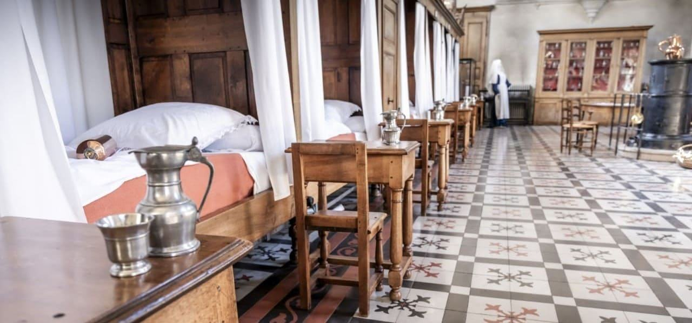

L’Albarelle
Des bénévoles passionnés au service d’un patrimoine hospitalier unique.
Sauver, étudier, faire connaître
L’Albarelle est une association loi 1901 fondée en 1993, peu après la fermeture de l’hospice, pour protéger le patrimoine architectural, mobilier et documentaire de l’Hôtel-Dieu de Belleville-en-Beaujolais.
Elle conserve et étudie les archives encore présentes sur le site, mène des recherches sur le passé pharmaceutique, médical, chirurgical et religieux de l’établissement, et participe à l’animation du lieu : expositions, conférences, entretien du jardin de plantes médicinales.

Trente ans d’engagement
L’hospice de Belleville ferme ses portes en 1991. Quelques années plus tard, en 1993, des habitants créent l’Albarelle pour que ce témoin de la vie hospitalière ne disparaisse pas.
En collaboration étroite avec la communauté de communes Saône-Beaujolais (CCSB), l’association a participé à la conception du musée de l’Hôtel-Dieu et à la mise au point du discours des visites, élaboré à partir des archives retrouvées. Elle est aussi à l’initiative de nombreuses expositions et de l’entretien du jardin de simples.
Le 13 octobre 2023, elle a fêté ses trente ans, en présence du maire de Belleville et de délégués de la Fondation du patrimoine. Ses bénévoles préparaient alors un article sur l’histoire de l’Hôtel-Dieu pour la revue en ligne de la Société française d’histoire de la médecine.
Sources : presse locale (Le Patriote Beaujolais, octobre 2023) et site du musée. Texte à compléter par l’association avec ses propres souvenirs et dates clés.
Quatre manières d’agir
Protéger
Veiller sur le bâtiment, le mobilier et les collections de l’Hôtel-Dieu, classé Monument historique.
Étudier
Conserver les archives et mener des recherches sur le passé pharmaceutique, médical, chirurgical et religieux du lieu.
Animer
Organiser des expositions et des conférences gratuites, entretenir le jardin de plantes médicinales créé par l’association.
Transmettre
Contribuer au contenu des visites et faire connaître l’histoire hospitalière à tous les publics.
Ce qui nous guide
- La mémoire : rendre hommage à celles et ceux qui ont soigné et été soignés ici.
- Le partage : des événements ouverts et souvent gratuits, pour tous les âges.
- L’engagement bénévole : une équipe d’une vingtaine de bénévoles actifs.
- La rigueur : un travail fondé sur les archives.
Formulation proposée à partir des missions de l’association : à valider ou reformuler par ses membres.
Un pot d’apothicaire pour emblème
L’albarelle est un pot de pharmacie cylindrique, resserré en son milieu pour être saisi d’une main, qui servait à conserver onguents et drogues.
Probablement originaire de Perse, il apparaît en France au XIVe siècle. Son nom rappelle l’apothicairerie de l’Hôtel-Dieu, qui conserve une riche collection de pots en faïence, en verre et en porcelaine. Le logo de l’association l’associe à l’image du bâtiment.
Celles et ceux qui font l’Albarelle
Une vingtaine de bénévoles actifs, dont un bureau de cinq membres.
Partenaires
- Commune de Belleville-en-Beaujolais, qui gère le musée
- Communauté de communes Saône-Beaujolais (CCSB)
- Fondation du patrimoine (délégations Val de Saône et Rhône-Alpes)
- Ligue pour la protection des oiseaux (ateliers au jardin de simples)
Mécènes et autres partenaires : à compléter par l’association.